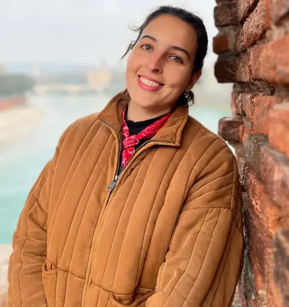

The people who handle your case.
Italian lawyers, document specialists, and operations professionals — each contributing deep expertise to your citizenship application.
Legal Advisory

Marta holds a Law Degree from the University of Naples and is a practicing Italian lawyer. Since 2021, Italian citizenship by descent (Jure Sanguinis) has been a major focus of Marta's practice. Cases are accepted only after a thorough eligibility review and document analysis to ensure each client has the strongest possible foundation for their application.
Andrea holds a Law Degree from the University of Turin and is a practicing Italian lawyer with extensive experience representing cases in Italian court. Andrea collaborates closely with Aldo to prepare and present citizenship cases in Italian court, ensuring every filing meets the exact standards required for a successful judgment.
Operations Team
Aldo holds a Law Degree from the University of Turin and specializes in the recognition of Italian citizenship by descent (Jure Sanguinis). With extensive experience collaborating with law firms and clients worldwide, Aldo has a proven track record of successfully helping individuals and families obtain their Italian citizenship.
"I specialized in the recognition of Italian citizenship (Jure Sanguinis) because it's deeply personal to me. My family faced the challenges of migration first-hand when they returned to Italy from Argentina. This has driven me to help countless families reclaim their Italian heritage and citizenship through lineage."
Spencer spent two years independently navigating the Italian legal system, going through the process of gaining an Italian Passport through descent, and is now a dual Italian citizen. Prior to Citizenship Italia, he managed clients like Samsung and the NBA for technology companies and startups. He now brings this expertise to deliver top-tier customer service and personalized support throughout the citizenship application process.
Support Team

Guillermina, an engineer by profession, relocated from Argentina to Italy to obtain dual Italian citizenship through Jure Sanguinis. Successfully navigating the process on her own, she gained comprehensive expertise in acquiring the required documents for such cases. She now leads our document retrieval process with precision and dedication, coordinating directly with Italian municipal offices, archives, and parishes to obtain records on behalf of our clients.
What Clients Say
From families we've helped
"Everything was taken care of! Translating the documents, certifying each document, and assembling the file to request citizenship. This made the process of getting my dual Italian citizenship easy and hassle free."
"The process moved quickly and at each step Aldo and his team took the time to explain the details to me. I recommend these services to anyone looking for professional and effective support for obtaining Italian citizenship."
"I contacted Aldo to begin the Italian citizenship process. Despite some missing information, they quickly obtained the necessary birth and death certificates. They also handled all apostilles and digitizations, assembling a complete file for submission. Their constant guidance and professionalism made the entire process seamless."
Editorial Standards
How we write and review our guides
Our guides are written by the Citizenship Italia team for American families, in plain English. Aldo Ponte, our Head of Citizenship Procurement, who holds a law degree from the University of Turin, reviews every guide for accuracy, and each guide shows his name and the date of the review.
- Sources you can check. Every guide links to its sources: Italian law on Normattiva, the Foreign Ministry and consulate websites, and court decisions.
- Dated and updated. Each guide shows when it was last updated. When the law, a court ruling or consulate practice changes, we update the guides it affects.
- Information, not a promise. Guides explain the rules; they are not legal advice for your case, and we never guarantee outcomes. Your free consultation applies the rules to your family's documents.
- Corrections. If you spot an error, email team@citizenshipitalia.com and we will check it.